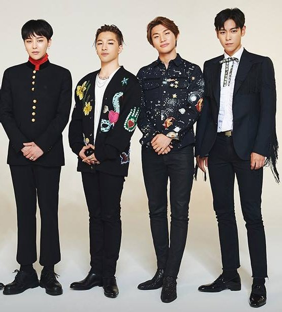
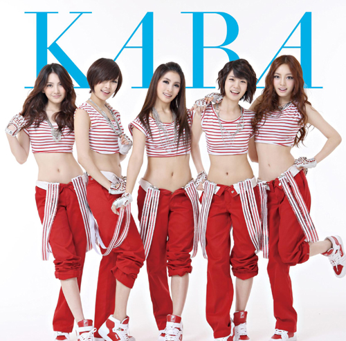

2세대 K-POP의 특징
2세대 아이돌은 2004년부터 2011년까지 활동한 K-POP그룹이다. K-POP의 성공과 인터넷 인프라 발전에 힘입어 글로벌 시장 진출을 본격화 하였고 팬덤 문화가 한층 더 성장하였으며 다양한 컨셉의 음악을 선보였다.
대표 아티스트
- 소녀시대
- 빅뱅
- 카라
아티스트 정보
- 정보
- 대표곡
- 특징
- 정보
- 대표곡
- 특징
- 정보
- 대표곡
- 특징
1. 소녀시대

| 소속사 | SM Entertainment |
| 데뷔 | 2007 |
| 팬덤명 | S♡NE |
| 상징색 | 핑크색 |
- Gee
- 소원을 말해봐
- The Boys
- Lion Heart
- Forever 1
- 걸그룹 전성기를 이끈 국민 걸그룹.
- 중독성 있는 음악과 강력한 퍼포먼스로 대세 장악.
- 긴 활동 기간과 수많은 히트곡을 보유.
2. 빅뱅
| 소속사 | YG Entertainment |
| 데뷔 | 2006 |
| 팬덤명 | VIP |
| 상징색 | 노랑·검정 |
- 거짓말
- Fantastic Baby
- Blue
- 하루하루
- Bang Bang Bang
- 자작곡 기반 음악성과 트렌드를 동시에 잡은 그룹.
- 힙합·팝을 결합한 독보적 스타일 형성.
- 아이돌 음악을 대중예술 단계로 끌어올림.
3. 카라
| 소속사 | DSP Media |
| 데뷔 | 2007 |
| 팬덤명 | 카밀리아 |
| 상징색 | 청록빛 |
- Mister
- Step
- Lupin
- Pretty Girl
- Jumping
- 일본 진출 성공의 대표 케이스.
- 밝고 에너지 있는 음악과 퍼포먼스로 인기.
- '점핑·미스터' 등 해외에서도 광범위한 팬층 확보.